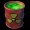
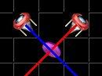
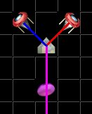

| Barrel  | You must not hit these with any beams of light or allow floating mines (see moving objects section) to hit these either. If you hit one you will have to restart the level. |
| Crossed beams are not considered merged If you have two beams of light from different directions crossing on a square that square is not considered to be the merged color. In fact crossing is altogether useless since you are not allowed to make a coin spin with cross beams. | |
| This is an example of a bad merge. Although red and blue exist on the magenta coin the color is not considered merged. Also this violates the crossing rule described in the section 'Principles'.  | This is an example of a proper merge to form magenta and hit a magenta coin.  |